Final Report
Project Summary
Moogle Maps is a Minecraft project that utilizes reinforcement learning to teach a Minecraft agent how to travel across constructed terrain to reach a destination. The agent is spawned at the center of the map that is 50x50 blocks and surrounded by a glass wall. The agent must maneuver to a randomly chosen end coordinate marked by a torch and colored sandstone within 50 moves.
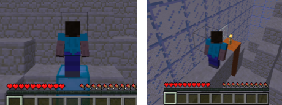The map will have changing terrain generated by Perlin noise to give the agent some verticality and hills to traverse. The agent will be given the ability to move forward, rotate left, rotate right, and jump forward in order to properly path through the world. The agent is given two observations: its longitudinal and lateral distance from the end coordinate and the height of the terrain around it in a 9x9 box. The end goal of the agent in this simulation is to efficiently and reliably maneuver around the hilly terrain and reach the endpoint. The efficiency is brought into play by the limited number of moves, which means that taking random or useless movements can potentially stop the agent from reaching the goal. The reliability is brought into play by observing the average percent of the distance that the agent is able to maneuver to reach the goal. The hilly terrain means that the agent may need to take paths outside of a direct path to the goal which requires the ability to reason about the paths the agent can actually maneuver along and how much they can help the agent reach the goal. This reasoning is not something that can be simply stated and thus lend itself to AI/ML as the solution in order to reach the aforementioned end goal of efficient and reliable movement.
Approaches
Basic Framework
To accomplish the task at hand we worked with a variety of custom models utilizing rllib’s reinforcement learning Proximal Policy Optimization model. This model is updated based on the reward that the agent gets each step as it takes an action and travels across the terrain. We trained our models with a reward function that has three useful parts that better allow our model to achieve our goals. First, we give a positive/negative reward for moving toward/away from the goal by looking at if the L1 distance of agent has changed relative to the previous position. We specifically give a reward of +5 for movement toward the goal and -5 for moving away from it. These rewards will help with our agents reliability in moving toward the goal as it will give the agent an incentive to move as close as possible to the goal. Second, the agent's actions have a cost. When the agent performs each action, it will receive a negative reward based on the action taken. For jumping this reward is -2, while for the rest it is -1. These negative rewards will move the agent towards a greater efficiency in movement as it will be dissuaded from taking useless actions like a random turn as it rack up negative rewards for the agent. Third, we have a large reward +100 that is given to the agent for reaching the end. This reward was developed later on than the other 2 rewards and fixes an issue that we had in that the models were unable to properly reach the goal when they got near it. This reward gave the agents the incentive to properly make the pathing needed to finish the job.
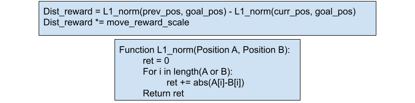Though mentioned earlier in the problem statement, the observations that are received are the longitudinal, Δv, and lateral, Δh, distances of the agent from the goal, and the relative heights of all the blocks around the agent within a 9x9 block surrounding the agent. With these observations the agent must figure out which action it should take to get closer to the end coordinate. It has to decide if it wants to jump forward which has a greater negative reward or just rotate left or right or step forward. When the agent rotates we manipulate the observation array to rotate so that all of the knowledge passed to the agent is relative to its current state. This information is crucial to our models so that we can reason about how one can maneuver through the terrain shown in the observation arry in the direction given by the distances of the agent from the goal.
 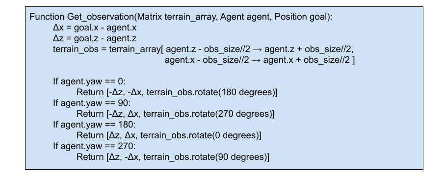
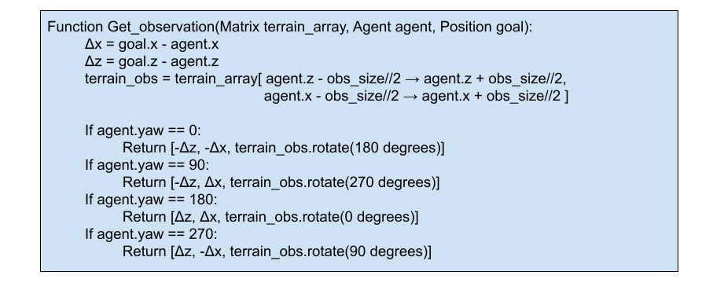
Models
Utilizing the basic framework for the training the models above, we developed a variety of models and modifications to evaluate against each other in order to see if we could develop a better model than the default one for the PPO trainer. As we were training a variety of models of varying complexity we were worried about the time and computational power it would take to train our models and thus created a simulated environment outside of minecraft that could train the agent without the overhead minecraft brings into play. We replaced the ground with an array of various block heights and the agent with variables representing its x,y, and yaw components. This new training ground allowed for much more rapid training of models and reduced a day of training to a couple hours allowing us to test more varieties of models than previously possible. Once we finished training models in this virtual environment, we were able to save the models and test them in the minecraft world to evaluate how it performs in more true fashion.
Default Model
Using the default PPO trainer model given by the ray library, our agent was able to learn how to consistently travel across the flatland world to the goal. When moving through the noisy perlin terrain, this ability still stayed but to a lesser extent reaching an average end distance score of .73 by 150,000 steps. This ability was quite good and it was easy to use and train, but it is clear that there is more that can be done through other methods, as it still would get stuck and unable to properly maneuver the terrain when it would run into certain walls. The following models are our attempts to find different ways to gather more information about the terrain and increase our agent’s ability to reach the end.
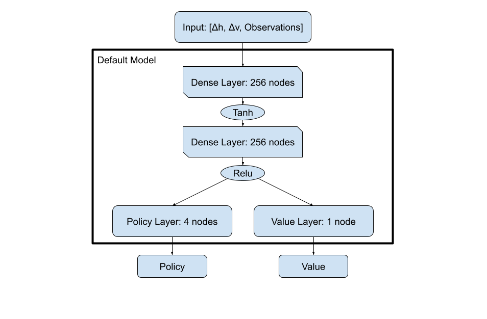General Custom Model
For the custom models we created they can be roughly generalized down to a framework in which we developed initial layers to do terrain analysis on the observation portion of the input before bringing it together with the [Δh, Δv] data which would you the direction of movement in order to make a decision on what your movement should be. The hope of the model is that the terrain analysis can find the pathways in which it is easiest for our agent to maneuver in so that a more informed movement decision can be made at the end. For our models, it seemed that the terrain analysis benefited the most from increased complexity while our end movement decisions will be quite simple overall.
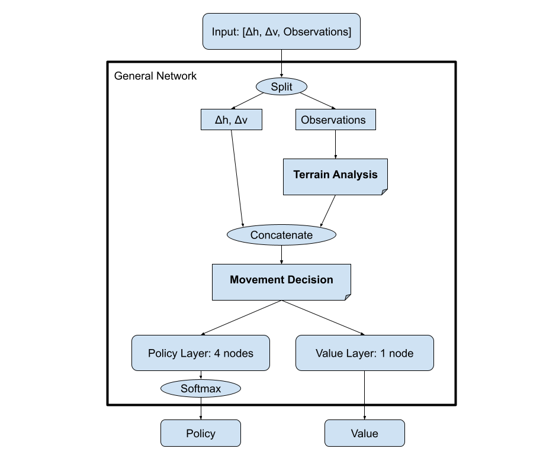Modified Neural Net
We began by working with pytorch to develop a modified version of a neural network where we customized the layers and built the policy and reward function. To customize the terrain analysis layer with more complexity inorder for the model to better address the large input observation we added three dense layers which are then concatenated with the distance observations to pass to the policy layer. This allows the model to first understand the complexity of the terrain and then make a movement decision based on the distance from the end coordinate. This multilayered neural network needed to be improved however because you can see how the distance observations are directly fed into the linear combination of the policy layer. This would cause most of the emphasis being taken away from the terrain analysis which is an important part of the decision making. We found this model to have an average distance value of 0.75-0.79. The agent would be able to learn to get to the end coordinate but had trouble avoiding large obstacles or getting around walls that blocked its path.
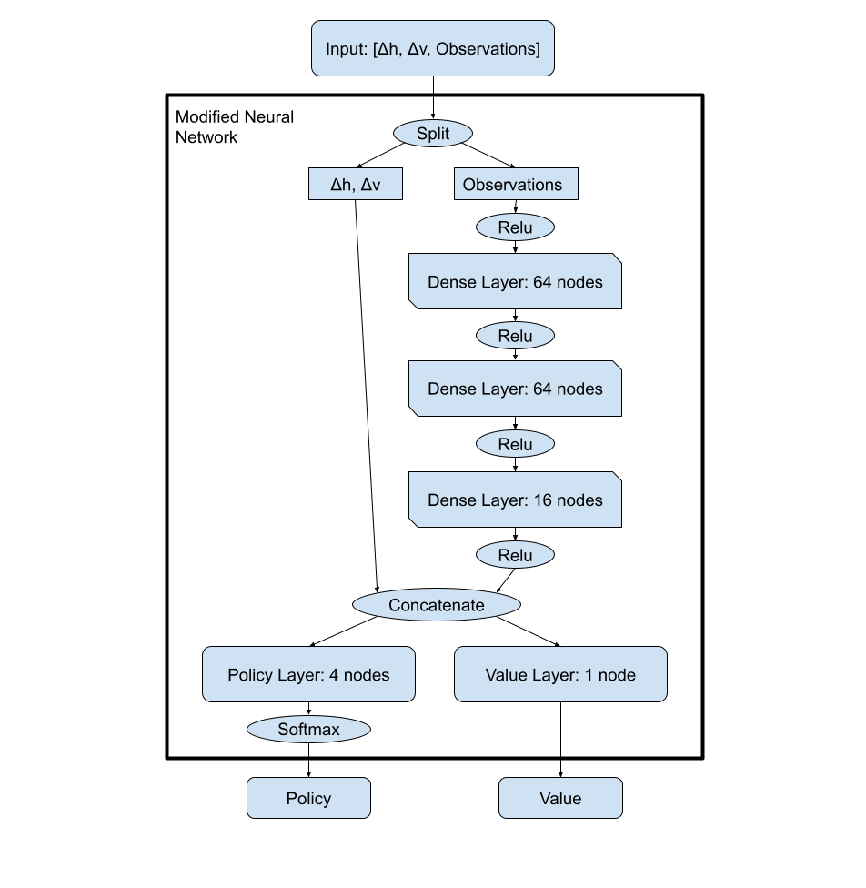Adding LSTMs
Though the modified neural network did a good job at moving around, we felt that giving the model a sense of memory could help out with stopping some of the places in which the model could get stuck. Because we wanted memory and ray[rllib] has an easy way to implement them on any model, LSTMs seemed like the way to go. After some tweaking with the built in LSTM configuration for rllib, the results were similar, and we chose to come up with a different model since it offers more flexibility and room to improve our model. We assume that the main issue with the LSTMs is that they were placed after the output due to them being implemented by rllib. This placement probably didn’t allow the cell to have much knowledge about the world around it and it may have benefited from moving to after concatenation of our terrain analysis and distance values.
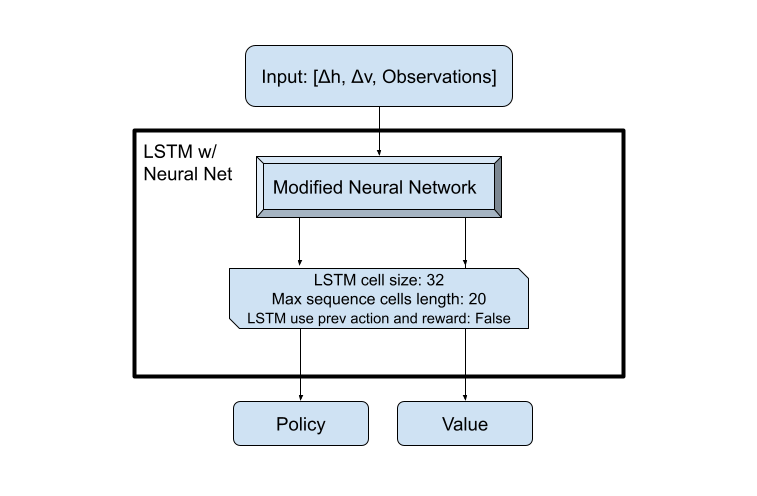Adding CNN’s
Considering that the observations that we gathered naturally fit within a 2d array, the idea of using a convolutional neural network on the observation data flowed naturally. The resulting model that we created from various testing is shown below. As you can see, the terrain analysis was done using a convolutional layer with 8 filters that had a kernel size of 3x3 followed by 2 dense layers with 64 and 32 nodes respectively. The actual convolutions done on the observation array were quite simple due to the fact that we were only dealing with a 9x9 matrix of values which made multiple passes of convolutional layers tough as we wanted to avoid padding. Though Relu was used originally in the terrain analysis, Tanh appeared to help the model possibly due to its ability to work with negative values. For the other size of the data, the Δh & Δv were passed through a Tanh function before concatenation so that the values would be less spread out and hopefully easier to make a decision with. Finally, the movement decision was made using a dense layer of 16 nodes followed by Relu as the transfer function to the value and policy layers. This convolutional model had an incredible markup in its average distance value compared to the previous methods reaching a whopping .87 average distance score at the end of its training. This average distance score came at the cost of training time as it took 10,000,000 steps before it reached that point, which is far larger than any of the previous models took to finish training due to this model's complexity. Given the advantages to the distance score, this tradeoff for training time definitely seems worthwhile.
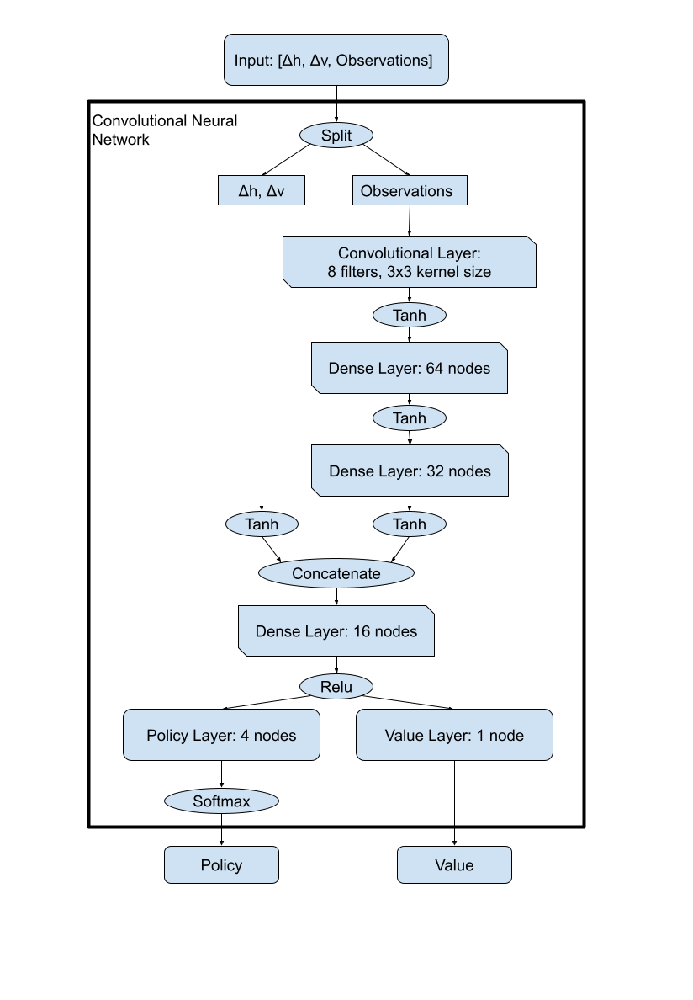Evaluation
Quantitatively, we can compare the various models we had created by observing the agents average distance values over time. The distance value is a calculation that divides the average distance the agent traveled toward the goal by the overall average distance that the agent would need to travel to reach the goal. This equation basically yields that average percentage that the agent was able to travel toward the goal in each trial. The data that we acquired from that was then graphed so that we could better compare the models improvements over time in a more visual sense. The comparisons of this graph are quite useful to see how reliable the agent is at reaching the goal, as a value less than 1 would mean that the agent at times is struggling to reach the end at times. The model with a higher distance value will almost certainly be more reliable then the others. This graph can also be useful in determining efficiency to an extent. If the model is terribly inefficient it will not be able to reach the goal and thus the distance value will also go down. The issue with this data is that it can’t determine efficiency past the inability to reach the goal.
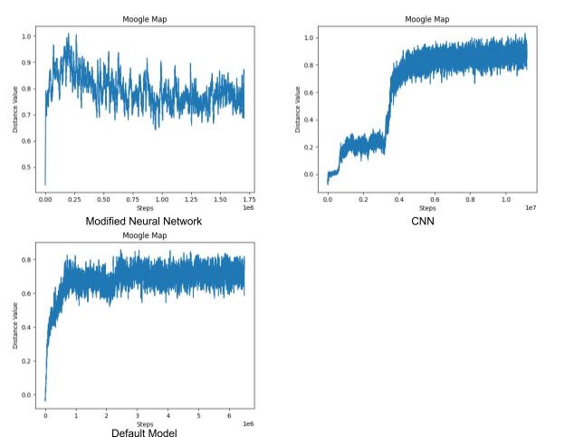As you can see in the graphs of the distance values above, the modified neural network reaches an average of about 0.8 distance value. This means the agent had an average distance of 80% to the end coordinate. Meanwhile, our best model, the convolutional neural network, on the right averaged about 0.85-0.87 distance value. This shows that the agent was more efficient on average and reached the end coordinate more often than the other models. The default model did the worst with an average about 0.73 distance value. Overall, you can see that the final convolutional model that we created achieved a .12 increase in distance score over the default, meaning that it made it 12% closer to the goal on average. This shows that despite the fact that the CNN model still had some struggles with reaching the goal with complete accuracy, it can be called a success in that it is vastly more reliable and efficient than the default model we initially used.
Qualitatively, we can view terrain graphs that are generated as the model is training. These graphs show how the agent moved along the terrain and is useful in determining the inefficiency of the various models we are dealing with. If we see that the agent is taking moves in the terrain map that are useless for reaching the goal, we can mark that down as a place of inefficiency for the model.
These graphs are not used for comparisons between different models as it is not hard enough data to make those comparisons, but it is useful for evaluating the places in which our models are lacking or finding places where our model struggles. This means that it is useful in the development of the subsequent model rather than determining if one model is better than another. A case of this was in the development of the end reward that was mentioned earlier in the approach section, as we were able to view the agents looping around the end points without landing directly on them, as seen in the terrain map (A) below. The end reward ended up fixing this issue and led to better subsequent models. Other issues, like in the maps (B) and (C) below, can inform us that the models either need more training, there is some bug inhibiting our model’s ability to function, or the complexity of the model needs to be modified. Finally, if we see the agent move properly toward the goal, map (D) below, we can be semi-sure that our model is moving with a reasonable amount of efficiency.
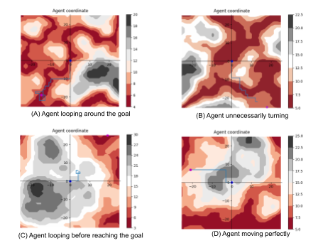References
- https://gist.github.com/eevee/26f547457522755cb1fb8739d0ea89a1
- https://pytorch.org/
- https://pytorch.org/docs/stable/generated/torch.nn.Conv2d.html
- https://towardsdatascience.com/a-comprehensive-guide-to-convolutional-neural-networks-the-eli5-way-3bd2b1164a53
- https://microsoft.github.io/malmo/0.21.0/Schemas/Mission.html
- https://microsoft.github.io/malmo/0.30.0/Documentation/index.html
- https://docs.ray.io/en/master/rllib.html